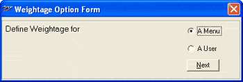
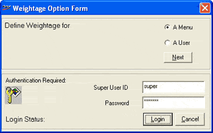

Menu/ User Weights
Menu and user weights are used to ensure security to
Shoper database. This option allows the defining of weights for menu options
and users.
How to reach: Setup
> Supervisory Functions > Menu / User Weights
The Weightage Option
Form is displayed as shown.

Define Weightage for:
Choose A Menu or A
User for which the weight is to be defined.
Next: To move to the next step
The Weightage Option
Form extends to display the Authentication
Required details.

Super User Name:
Enter supervisor’s login ID.
Password: Enter
supervisor’s password.
Login: To login and assign user weight
Cancel: To quit the process
If the user name and password are correct, the next
window will be displayed depending on your choice:
Note: Ensure that
the Menu Weights are equal or
lesser than the User Weights